助力美好生活：不可错过的 7 款实用App
今天想推荐一些实用的 app，主要是因为前几天电脑出问题，后面的解决方式是重新安装系统，但是就一个普普通通的重置系统就折腾快两天才搞定，周五把新系统安装好之后，就是重新安装上各种必备的软件。
在检索信息的过程中突然发现由于多年未重新安装系统和更换设备，日常使用的过程中并没有把常用的 app 做记录，导致在检索各种软件上又费了不少时间，定期的记录、总结、复盘很重要，接下来会加强这一块。
所以，也就有了本次的主题：推荐各种亲测好用的，不可错过的实用 App，助力美好生活。
1. 小红书
作为一名钢铁直男，在前几年都是不用小红书的，虽然在小红书的热度越来越高的时候下载体验过，不过现在已经是小红书的忠实用户，主要使用场景是拿小红书当搜索引擎来用。

也强烈推荐大家都试试小红书网页版，检索效率进一步提升。
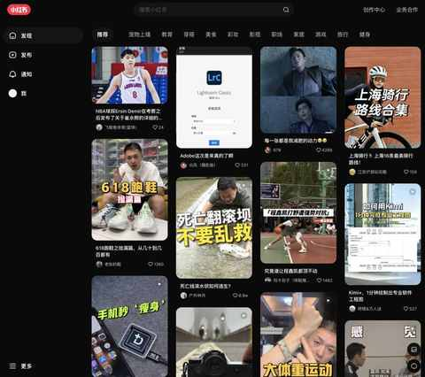
2. 微信读书
支持全端，而且现在新书的上架速度越来越快。
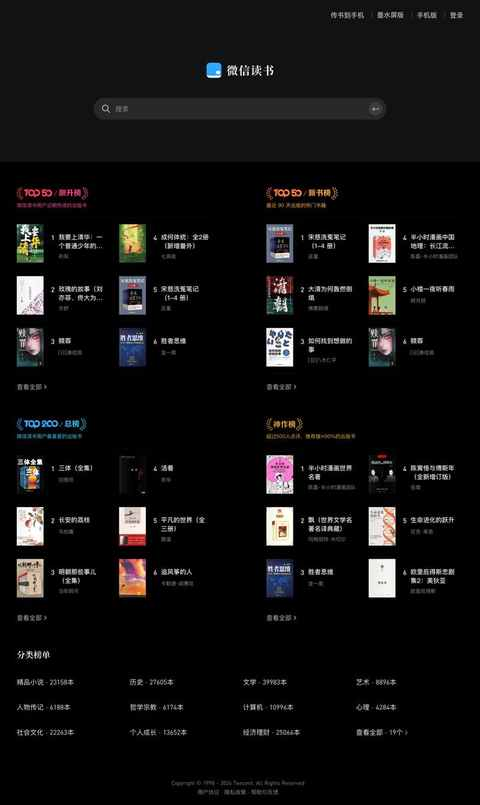
网页版本也已经支持双栏阅读，使用得当就能进一步提高阅读效率。
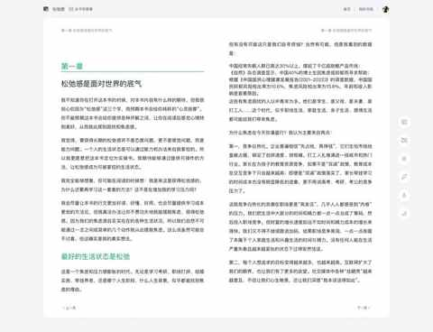
如果挑战成功 365 天打卡的活动，那至少能白嫖一年的会员。
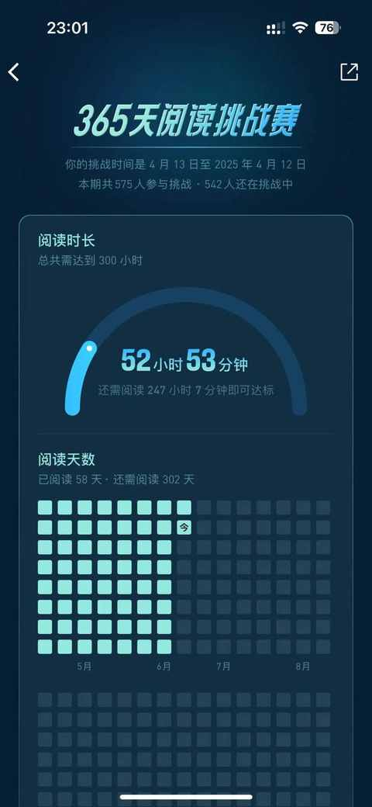
3. Kimi
ai 工具的热度始终不减，也已经有一些工具得到越来越多的用户认可，作为非专业用户，不需要知道各家产品都擅长什么，只需要知道需要用 ai 的时候用哪款产品即可，Kimi 恰恰是一款这样的产品。
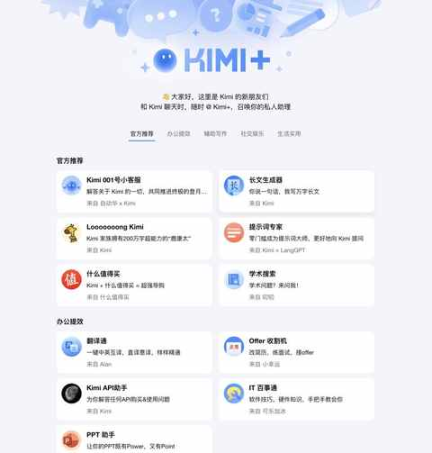
4. 白描
一款 OCR 文字识别软件，支持全端。
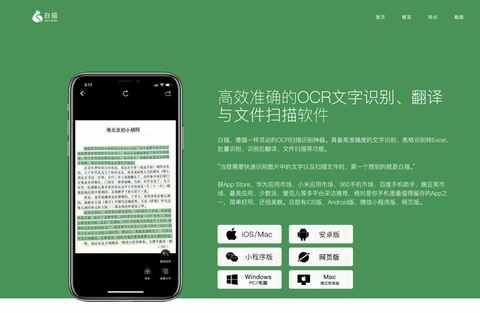
甚至有完整功能的网页版本：
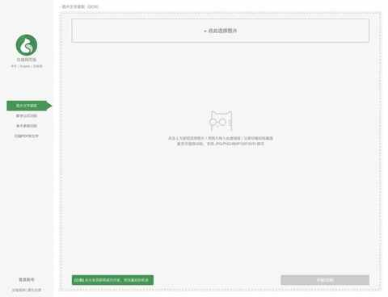
识别的成功率和正确率都很高：
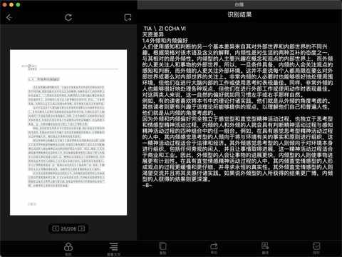
5. 闲鱼
居家必备，虽然很早就知道闲鱼，但用的多起来成为活跃用户，是在前两年，刚开始只是卖自己的一些闲置的东西，后面也逐步买了一些。
该省省该花花，二手的东西甚至比买新的还不容易踩坑，目前整体上都很满意，更没有遇到奇葩卖家和买家。
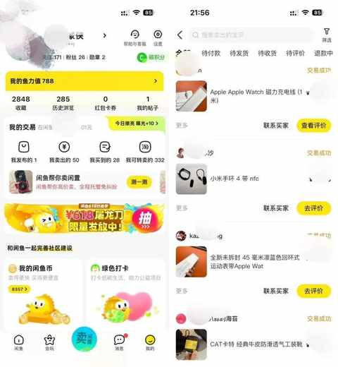
6. Apple Music
音乐类 App 中鲜有的 99% 的功能都是聚焦在听歌方面的，没有各种用不上的花哨的功能，界面简洁美观。
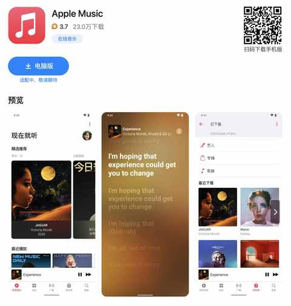
有特别多的高质量歌单:
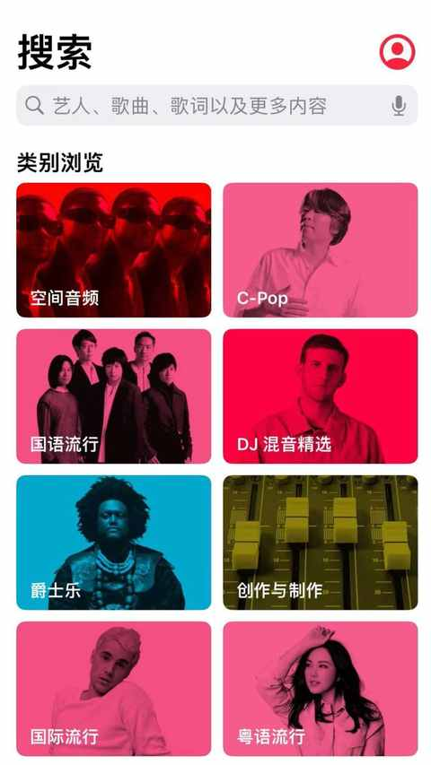
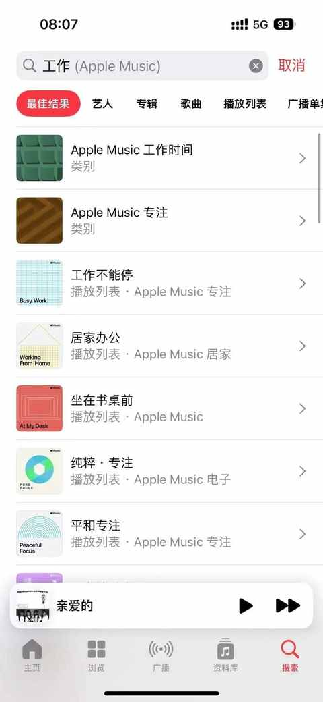
7. 微信输入法
推出没多久，微信团队出品的一款输入法，个人觉得最亮点的功能是：跨设备同步，仅需相关设备上都安装上微信输入法然后匹配上即可。
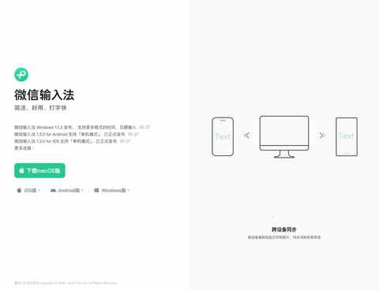
刚开始是仅支持复制文字，现在已经支持跨设备同步图片：